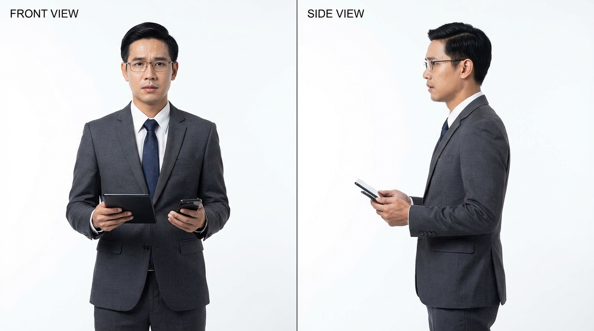
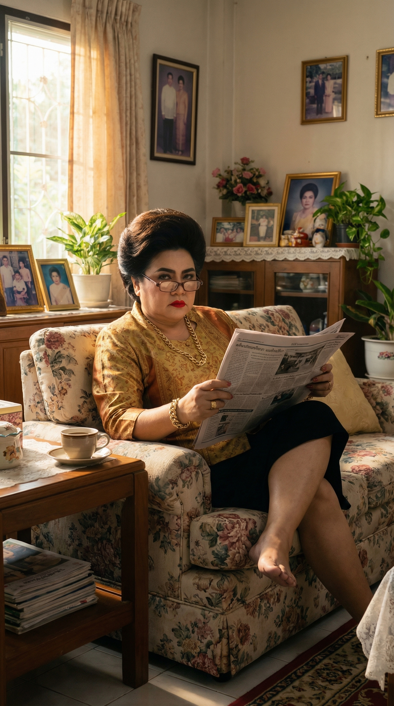

กระบวนการผลิตละครสั้นแนวตั้งด้วย AI —
ตั้งแต่บท ถึง ฉาย
คือเวลาที่ผู้ชมดูจบบน IG · TikTok · Reels
Hook ต้องมาภายใน 3 วินาทีแรก
ทุกขั้นทำได้โดยคนเดียว · tool ฟรีมี credit ให้ทดลอง · เห็นผลจริงใน 1 วัน
| Tool | หน้าที่ | ทำไมเลือก | ราคา |
|---|---|---|---|
| Nano Banana Pro | ภาพตัวละคร + ฉาก | Consistent face · รับ ref image ได้ | ฟรี credit |
| Seedance 2.0 | Video หลัก | ราคาถูก · จีนเข้าใจ cinematic | ฟรี credit |
| Higgsfield Cinema | Backup / inpaint ref | EN prompt · camera movement เนียน | ฟรี credit |
| ElevenLabs | Voice Design + TTS | พากย์ไทยธรรมชาติที่สุด | Free tier |
| Lipsync Tool | ซิงค์ปากกับเสียง | Seedance ปากขยับไม่แม่น | แล้วแต่ |
"สิงหา... แกแน่ใจแล้วเหรอ?
3 ปีที่ผ่านมา แกพิสูจน์อะไรได้บ้าง?"
| A · 3s | CU พ่อ 33mm — "สิงหา..." |
| B · 2s | CU ลูก 85mm — reaction นิ่ง |
| C · 3s | Wide 16mm — scale ห้อง |
| D · 2s | Insert มือ 100mm — นิ้วเคาะ |
| E · 2s | Low angle 24mm — ลูกไม่กลัว |
| F · 3s | OTS 50mm — "แกพิสูจน์อะไร?" |
Ref ตัวละคร front + side view — ใช้เป็น base ตลอด production
character reference sheet, front view and side view,
Thai man, age 28, handsome sharp jawline,
short neat black hair, athletic build,
wearing worn-out plain black t-shirt,
neutral expression, white background,
ID photo style, clean lighting, full face visible,
photorealistic, Thai Asian face, consistent features
ภาพฉาก ไม่มีคน — feed เข้า Seedance เป็น ref
Cinematic wide shot, 16mm lens,
grand white neoclassical European mansion at dusk,
tall white columns, arched windows, white marble facade,
warm golden lights glowing from windows,
dark dramatic clouds in sky,
no people, photorealistic, vertical 9:16no peoplemultiple angles, 4 panels · 4 มุมใน 1 ภาพ

@[ref สิงหา] นี่คือ สิงหา ,
@[ref ฉาก] นี่คือ ref ของฉากนี้
cinematic live-action video，
Netflix 原创剧集质量，
85mm镜头特写，สิงหา穿黑色西装，
自信温暖的微笑，眼神坚定，
idle状态自然呼吸轻微眨眼，
豪华五星级酒店红地毯入口，
温暖金色灯光，竖屏9:16Tip · ตั้งชื่อไทยตรงๆ นี่คือ สิงหา ดีกว่า "young Thai man"
ทุก shot ที่มีบทพูด → gen เป็น idle ก่อน แล้วค่อยทำ lipsync เพราะ Seedance ขยับปากไม่แม่น
idle状态，
自然呼吸，
轻微眨眼，
极轻微晃动，
保持静止嘴唇自然开合说话，
头部轻微点头强调重点
正在说话：
"[บทพูดภาษาไทย]"เลือกเลนส์ตามอารมณ์ ไม่ใช่แค่ระยะใกล้/ไกล
| Lens | ฟีล | ใช้ตอน |
|---|---|---|
| 16 mm | กว้าง · เห็น scale | Establishing · ห้องใหญ่ คนตัวเล็ก |
| 33 mm | CU + context | เปิดฉาก · บทสนทนาที่เห็นห้อง |
| 50 mm | ตาคนจริง | OTS · POV · tracking |
| 85 mm ★ | Bokeh isolate อารมณ์ | Reaction · emotional CU |
| 100 mm macro | Detail จัดสุด | Insert · มือ · วัตถุ |
| 135 mm | เบลอหมด · เหลือจุดเดียว | ECU ตา · tension สูงสุด |
CU พ่อ 33mm → context ห้อง
CU ลูก 85mm → isolate อารมณ์
Wide 16mm → scale ห้องใหญ่
Insert 100mm → นิ้วเคาะเก้าอี้
Low angle 24mm → ลูกไม่กลัว
OTS 50mm → มุมตาลูกFull body 35mm → ทั้งคน+ฝน+บ้าน
CU หน้า 85mm → น้ำตา+ฝน
Insert 100mm → เค้กในโคลน
ECU ตา 135mm → เบลอหมดSeedance moderation เข้มมาก · ต้องรู้วิธีหลบ
Ref มีอาวุธ/เกราะ/ท่าก้าวร้าว → reject
你上传的图片不符合平台规则
| ผิด | แทนด้วย |
|---|---|
| 凶狠 | 严肃 / 坚定 |
| 威胁 | 不满 |
| 血 / 死 / 杀 | 痕迹 / 裂纹 |
| 爆炸 | 能量波纹 |
| ตาย / ฆ่า | เก็บไว้ TTS |
ElevenLabs Voice Design = ออกแบบเสียงด้วยภาษาเขียน
Example · พ่อผู้มีอำนาจAn elderly Thai man in his mid-60s.
Deep, authoritative baritone voice with a commanding presence.
Speaks slowly and deliberately, each word carrying weight and power.
Gravelly texture from age but still strong.
Calm but intimidating. Slight rasp.
Long pauses between sentences.
Structure ·
เพศ+อายุ →
ลักษณะเสียง →
วิธีพูด →
อารมณ์ →
ลักษณะพิเศษ
| ผิด | ถูก |
|---|---|
| ใช้ face ref sheet ใน Seedance | Gen ภาพฉากก่อน → ใช้ภาพฉากเป็น ref |
| Gen ปากขยับพูด | Gen idle → lipsync แยก |
| Intercut 5 มุม ใน 5 วิ | 1 clip = 1 มุม → ตัดต่อรวม |
| Prompt EN ใน Seedance | ใช้ภาษาจีน |
| ใช้เลนส์เดิมทุก shot | สลับเลนส์ตามอารมณ์ |
| เวลาไม่ sync (กลางคืน → เช้า) | เช็ค continuity ทุก cut |
ไม่ใส่ no background music | ใส่ไว้ · ไม่งั้นมันเติมเพลงเอง |
ภาพ ref โทนแดง · แต่ prompt เขียน cool blue → สีจะขัดกัน
Text ต้อง sync กับ ref image ทุกครั้ง
ถ้า scene ref ดี → reuse ได้หมด · แค่เปลี่ยน character prompt ก็ได้ clip ใหม่
Scene ref เดียวกัน · ฉากทางเข้าโรงแรม 5 ดาว red carpet · เปลี่ยนแค่ @[ref character]
ผลลัพธ์สุดท้าย · 1 นาที 37 วินาที · ใช้เวลาผลิตจริง 1 วัน คนเดียว
Q&A · ถามได้ทุกเรื่องที่คาใจ
ตั้งแต่ prompt ยัน pipeline